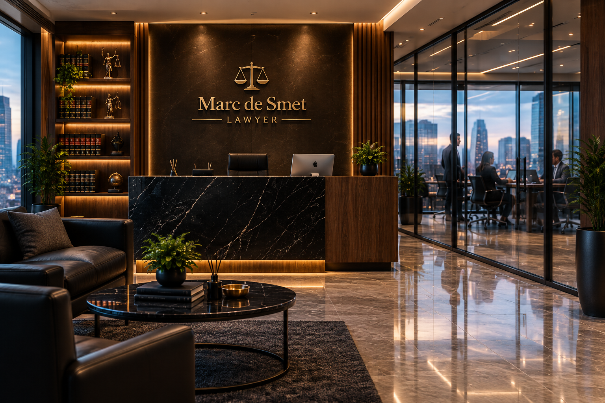

▦
Business & Commercial Law
Company formation, commercial contracts and business disputes.
Professional legal advice, dedicated to your needs. Whether you are an individual, entrepreneur or business, I provide clear, reliable and personalized legal support.
A wide range of legal services for individuals, businesses and organizations, with a practical and client-focused approach.
Company formation, commercial contracts and business disputes.
Liability, obligations, civil disputes and everyday legal matters.
Property transactions, leases and property disputes.
Family matters, divorce, custody and related proceedings.
Employment contracts, workplace disputes and termination matters.
Drafting, reviewing and negotiating agreements.
Representation and conflict resolution strategies.
Initial analysis, advice and practical next steps.
Marc de Smet is a dedicated lawyer committed to providing practical and effective legal solutions. He takes the time to understand each client's unique situation, offering clear advice and strategic support at every stage.
“Mr. Marc de Smet was very professional and patient throughout the whole process. He explained everything in a way that was easy to understand and always kept me informed.”
Sophie Laurent — France“I contacted Marc de Smet after being unsure about my legal options. He took the time to listen carefully and gave me clear advice without making things unnecessarily complicated.”
Thomas Müller — Germany“I was nervous when I first contacted the office, but Marc immediately made me feel more comfortable. Communication was excellent and my questions were always answered.”
Elena Rossi — Italy“Marc de Smet handled my matter with great attention to detail. What I appreciated most was that he was straightforward and explained both the possibilities and the risks.”
James Whitmore — United Kingdom“Very professional lawyer. Marc was responsive whenever I needed an update and explained each stage of the process clearly. The whole experience was much smoother than I expected.”
Anna Kowalska — Poland
Place des Nations-Unies 7
4020 Liège, Belgique
We receive our clients by appointment in a professional and confidential environment.
Opening Hours
Monday – Friday: 9:00 AM – 6:00 PM
(or by appointment)
WhatsApp official
+61 468 147 988
Email
law913375@gmail.com